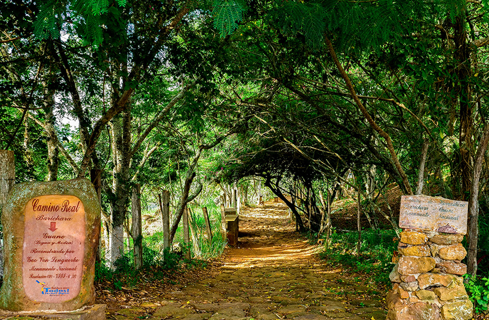
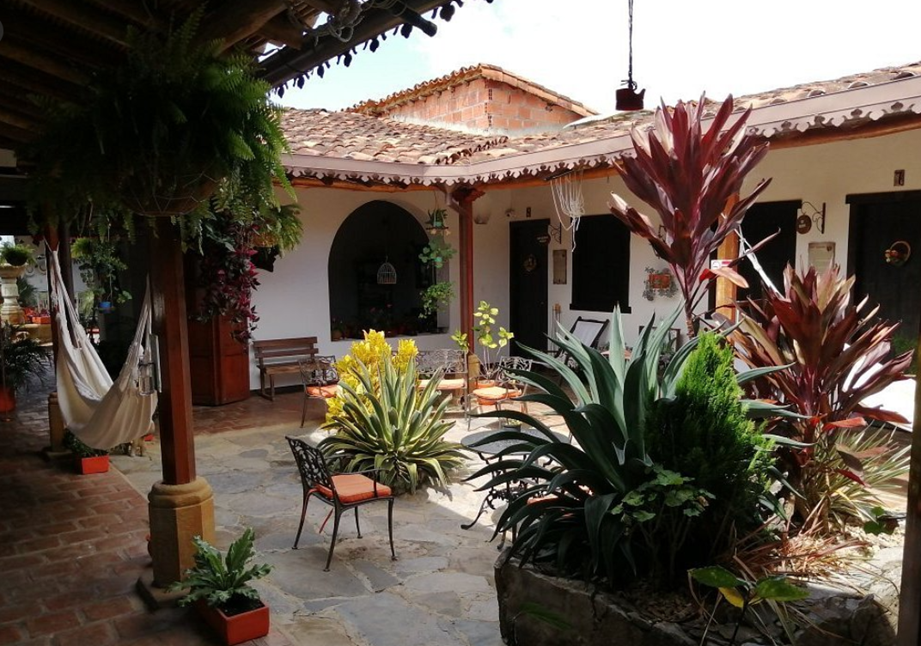
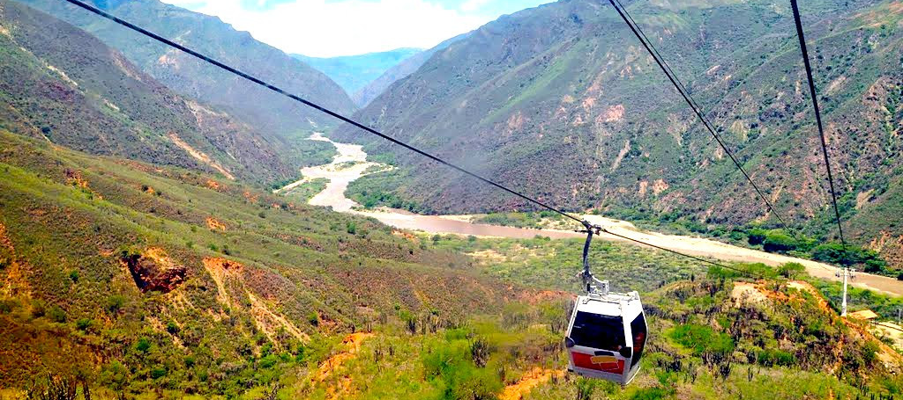
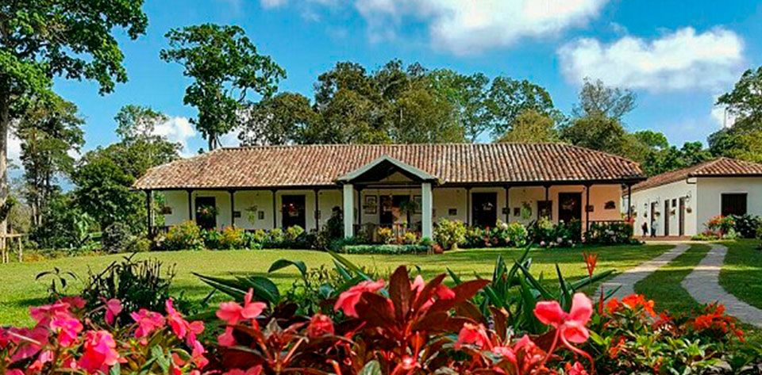
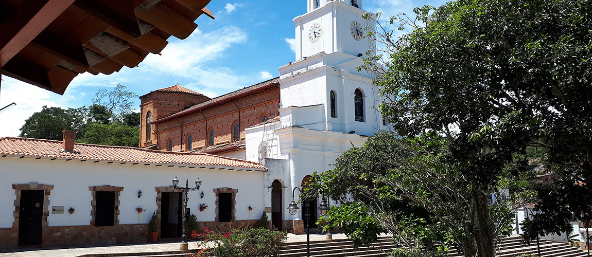
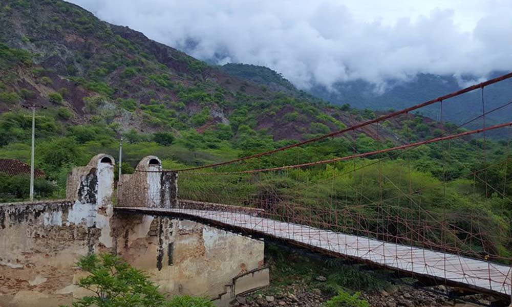
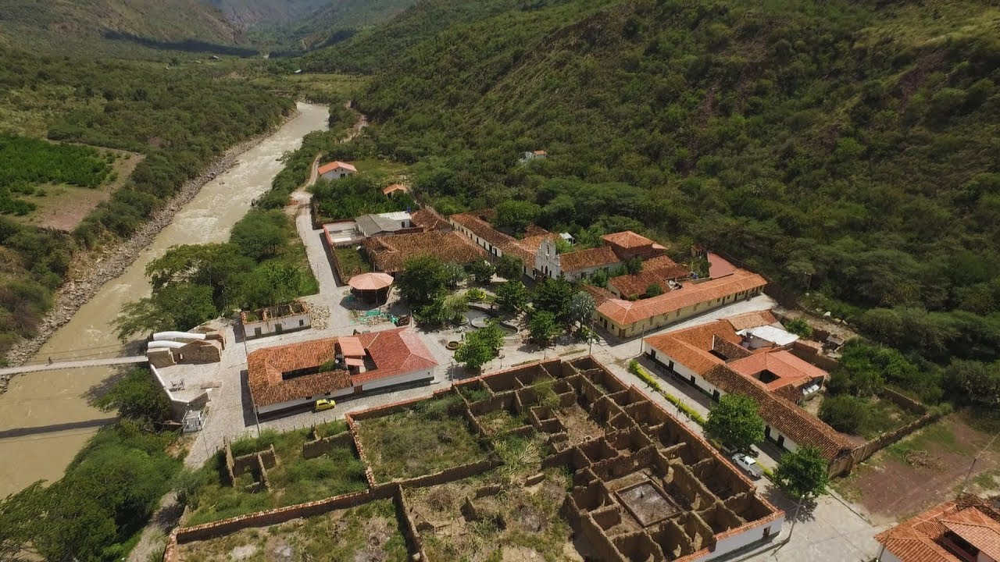

Destinos
Barrichara (Inicio)
Pueblo patrimonio de Colombia, conocido por su arquitectura colonial. Disfruta de arepas santandereanas, cabrito al horno, visita la Catedral de la Inmaculada Concepción y explora sus calles históricas.
Tramo 1: Barrichara - Guane (8km)
Camina por hermosos paisajes naturales de montañas, cañones y bosques. En Guane, un pequeño corregimiento con una gran herencia indígena, prueba la chicha, bebida tradicional, y empanadas de guiso. Visita el Museo Arqueológico y Paleontológico.
Tramo 2: Guane - Zapatoca (10km)
Descubre Zapatoca, "la ciudad de la seda", conocida por su clima templado. Deléitate con sancocho de cabrito, arepas santandereanas y jugos naturales. Explora su oferta gastronómica y sus atractivos.
Tramo 3: Zapatoca - Mesa de Los Santos (15km)
Admira impresionantes cañones y la exuberante vegetación montañosa. En Los Santos, prueba el famoso cabrito asado y el café de la región. Visita la Hacienda El Roble y disfruta de la naturaleza.
Tramo 4: Mesa de los Santos - Jordán (12km)
Visita pueblos con una rica tradición agrícola. Jordán te espera con café orgánico de Santander, empanadas, comida casera y la imponente Cascada Montegrande.
Itinerario
Llegada a Barichara en la mañana. Check-in en el Hostal Villa San Rafael. Tiempo libre para recorrer el pueblo, visitar la Catedral de la Inmaculada Concepción, explorar sus calles históricas y realizar compras.
- Actividades opcionales: Visita a las Cascadas de Juan Curí, taller de pintura con tierra, tour privado por Barichara, visita al taller de papel y al cementerio.
Alojamiento en el Hostal Villa San Rafael (habitación cuádruple o doble).
Salida a la 1:00 AM. Caminata por el Camino Real hacia Guane (5.5km, aproximadamente 2 horas). Visita al Museo Arqueológico y Paleontológico. Continúa la ruta hacia Zapatoca.
Check-in en hotel en Zapatoca a las 5:00 PM (aproximadamente). Alojamiento en habitación triple o doble.
Salida a las 4:00 AM. Recorrido por el Cañón del Chicamocha hacia la Mesa de Los Santos. Llegada en la tarde.
Actividades opcionales en Mesa de Los Santos: Visita al mercado campesino, Hacienda El Roble (Coffee Garden, safari, cata de café).
Cena en el restaurante de la Hacienda El Roble (no incluida). Desplazamiento y alojamiento en el Hotel Aguablanca (habitación doble).
Desayuno en el Hotel Aguablanca. Salida hacia Los Santos. Recorrido por el parque principal y almuerzo.
En la tarde, salida hacia Jordán.
Explora Jordán y sus alrededores, incluyendo la cascada Montegrande. Fin del recorrido.
